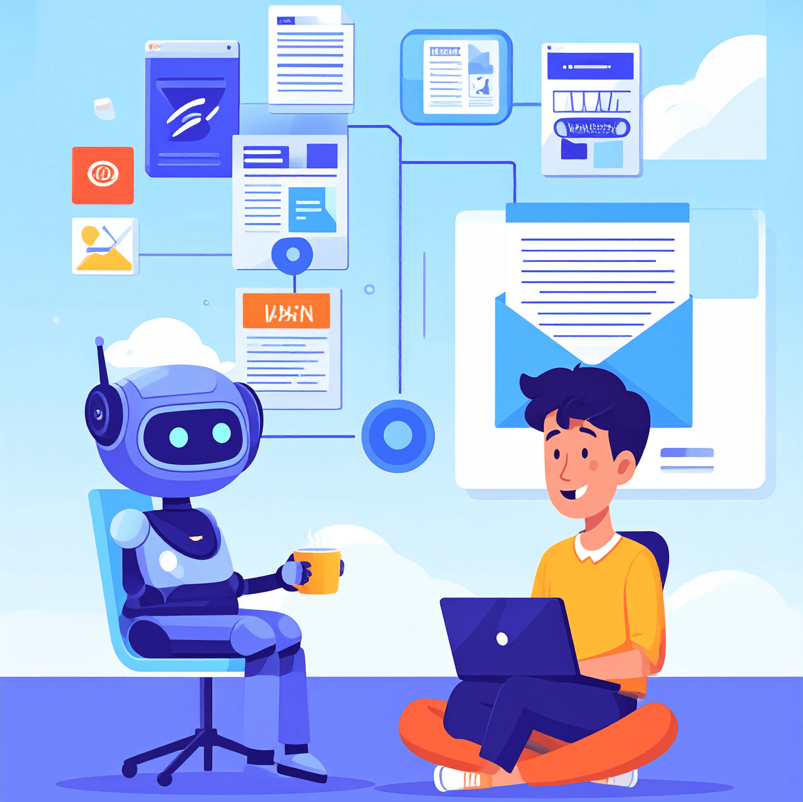
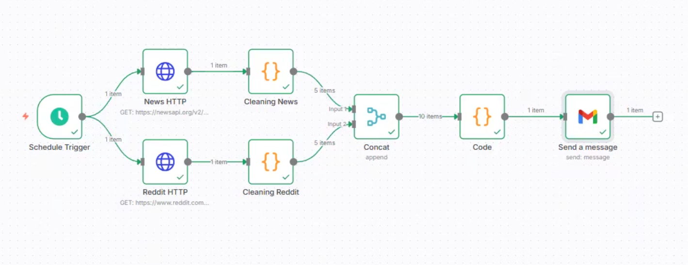

Automation · N8N
Automated Industry Insight Digest: beats the algorithm

The challenge
Staying on top of FinTech and AI trends felt impossible. Every day there were countless articles, forum threads, and Reddit discussions — but manually searching through them was a huge time sink. There had to be a smarter way to stay informed without spending hours scrolling.
The solution
I built an automated workflow using N8N that does the research for me. Every day it runs four steps automatically:
- Scrapes top news articles — fetches the 5 most trending FinTech and AI stories daily
- Gathers community insights — pulls the 5 most discussed Reddit threads from relevant subreddits
- Aggregates and formats the data — combines everything into a clean, easy-to-read brief
- Delivers to inbox — sends the curated digest straight to Gmail every morning
The workflow
Each node in the N8N workflow serves a distinct purpose — from scraping news and Reddit threads, to aggregating and formatting data before delivery. I designed it for clarity and scalability, so new sources or topics can be added without rebuilding the pipeline.

The impact
- Saved time — reduced hours of manual research to zero
- Stay ahead — consuming the most relevant, trending content, not what an algorithm decides to surface
- Proactive learning — turned information overload into a structured, actionable daily habit
- End-to-end ownership — demonstrated proficiency in automation, data aggregation, and building a solution from scratch
The final output
Once the workflow runs, everything lands in Gmail as a neatly formatted email. Open it in the morning and the day's FinTech and AI brief is already there — no scrolling, no noise, no algorithm deciding what's worth your attention.